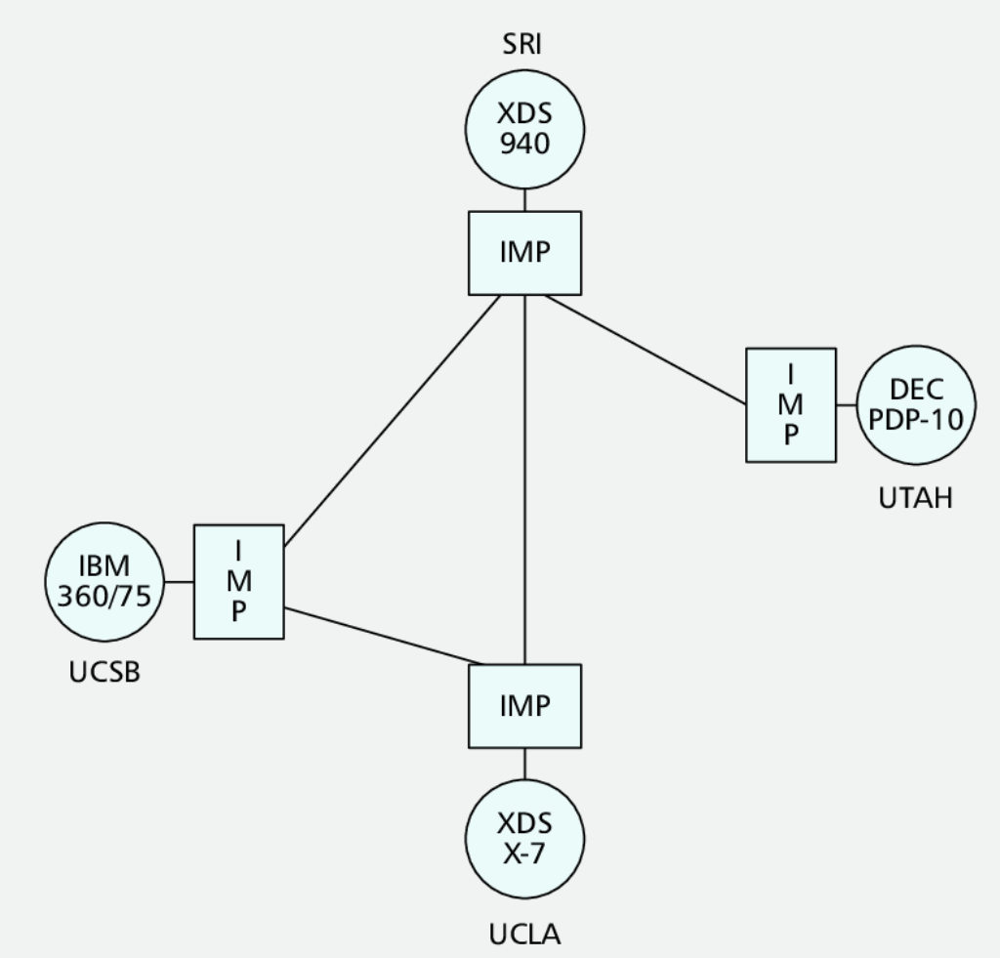
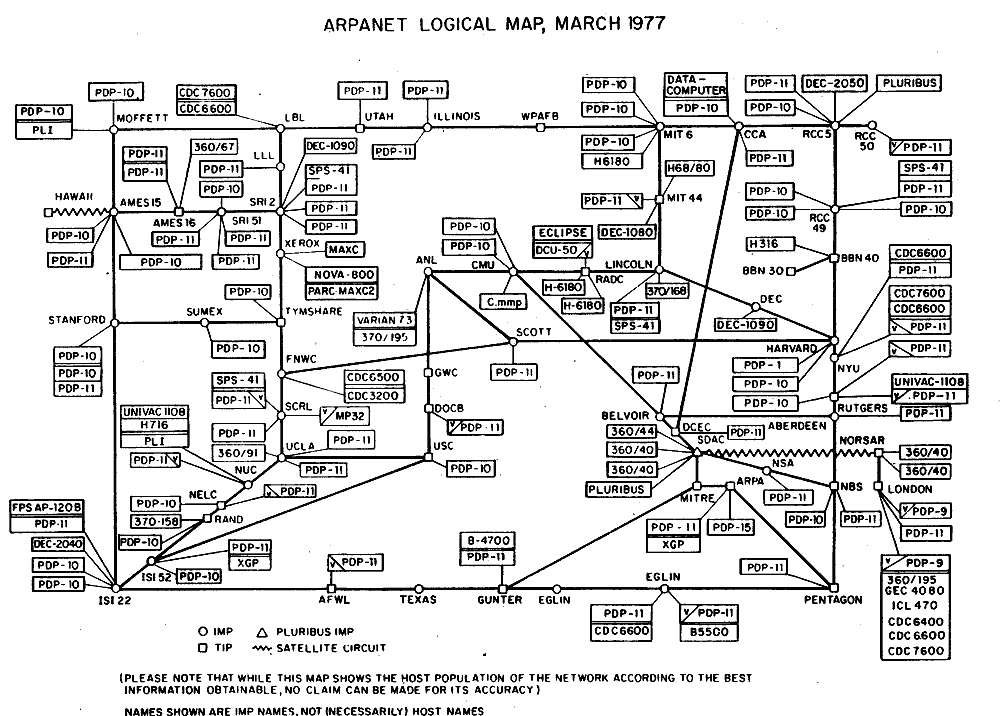

In the last lesson, the Internet Simulator connected you to just one other person by a single wire. Think about what would happen if we tried to connect everyone in the class that same way.
In the last lesson, the Internet Simulator connected you to just one other person using a single wire. What problems would we run into if we tried to connect everyone in the class that same way, with one direct wire strung between every pair of people?
Today we’re going to build a computer network that lets us communicate with multiple people. We’ll draw lines to represent our connections: if two people are joined by a line, they’re allowed to talk to each other. A single line can only join two people, but you can be connected to multiple people at once through multiple lines.
A single connection (line) can only join exactly two people together, never three or more.
You can connect to as many people as you like, and you can even draw more than one line to the same person as a backup connection.
Nodes A through E represent five people who want to talk to each other.
Drag between two nodes to draw a connection. Drag the same pair again to add a backup line between them, or click a line to remove it.
Connect the network however you’d like — there are no guidelines yet.
Connections cost money, so try to use the least number of connections possible.
Note: individuals can pass on information if it comes in on one connection and needs to go out another.
Redraw your network so everyone can still reach everyone else, but try to use as few lines as possible.
Remember: people can relay a message from one connection to another, so you don’t need a direct line to everyone.
Connections cost money, so try to use the least number of connections possible.
Connections can be cut, which might disconnect people from the network.
Try to keep your network cheap, but this time also protect against a single cut isolating someone. Drawing a second, backup line between the same two nodes is one way to do that.
Switch to Test a Cut and click a line to simulate cutting it. Any node that goes offline will be marked in red.
Connections cost money, so try to use the least number of connections possible.
Connections can be cut, which might disconnect people from the network.
Direct connections are faster than long paths made of several indirect connections.
Balance all three guidelines: keep it cheap, build in redundancy, and keep important paths direct.
Use Find a Path and click two nodes to check the hop count between them.
Thinking about our three guidelines, what is a strength of the network you created? What is a weakness of the network you created?
Back in 1969, the first version of the Internet was created as the Advanced Research Projects Agency Network (ARPANET) by the Defense Department. The initial configuration linked UCLA, the Augmentation Research Center at Stanford Research Institute (SRI), UC Santa Barbara, and the University of Utah. Each school connected one computer to the network through an IMP, an Interface Message Processor and an early router.

The first successful host-to-host connection on the ARPANET happened between SRI and UCLA at 10:30 pm PST on October 29, 1969. UCLA student programmer Charley Kline typed the command login, but the SDS 940 crashed after just two characters.
So the first message ever sent over the Internet was simply “lo”.
By 1977, the ARPANET had grown to link universities, research labs, and military sites across the country.

How would you use these words to describe today’s activity?
How would you use these words to describe today’s network-building activity?